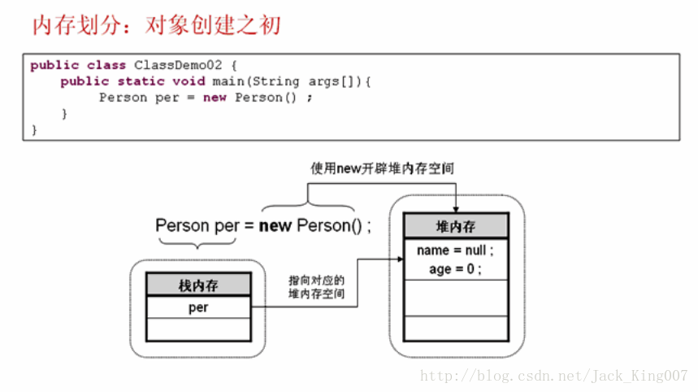
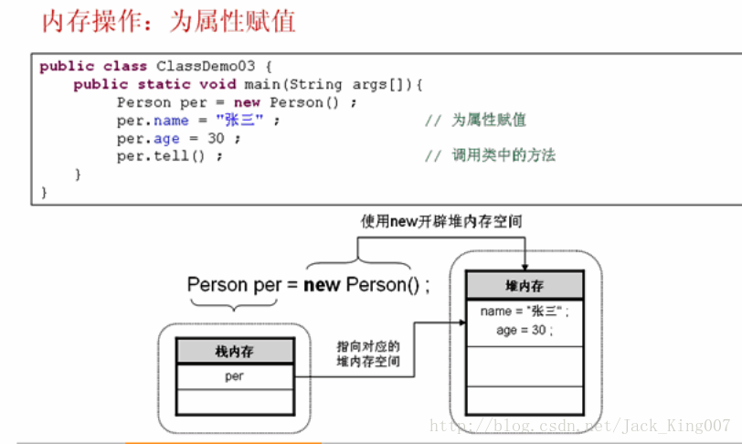
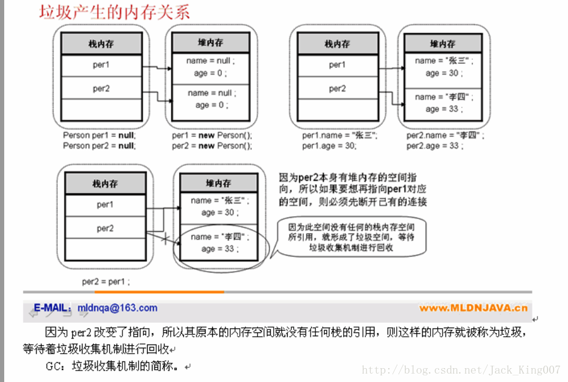

java基础之类与对象的进一步研究
类属于引用传递类型，数组中可以知道，引用数据类型必然存在占内存堆内存实际上类与对象的使用依然存在的这样的关系

Person per=new Person（）；
声明对象：栈内存中声明的，与数组一样，数组名称就保存在
栈内存中 只开辟栈你内存是无法使用的 必须要有堆内存的引用才能使用
实例化对象：new Person（）在堆中开辟空间 所有内容都是默认值

对象必须实例化之后才可以使用 实例化对象 并不单单
指的是
直接通过new 关键字 实现 只要其有队内存的空间只想则表示实例化成功

因为per2改变了指向所以原来内存空间就没有栈内存的任何引用 则这样的内存就被称为垃圾内存